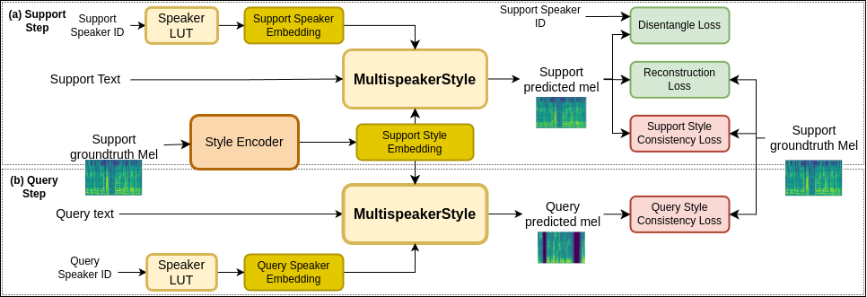

MetaSpeakerStyle
Meta learning-based Cross Speaker Style Synthesis for Multi-Speaker Multi-Style Text to Speech
Paper:Abstract. Recently, expressive speech synthesis has attracted more attention and research to improve the naturalness of speech. However, constructing an emotional speech datasets is a costly process, with each speaker able to express only a limited set of styles and emotions. Therefore, the development of models capable of cross-speaker style synthesis in speech synthesis is crucial for augmenting the diversity of synthesized speech in real-world applications. Additionally, most of the previous approaches focus on disentangling speaker and style embedding using the same sample as the source for content, speaker, and style input, which does not reflect the disparate sources of these inputs in the inference of real-world application. To address these limitations in the previous method, this paper introduces an unsupervised MetaSpeakerStyle model which is learned with a proposed meta learning procedure to reduce training-inference mismatch. The results of the experiment show that the proposed methods achieved better style expression and recognition compared to the baseline model.
MultiSpeakerStyle Model
The overview of MultiSpeakerStyle model.
MetaSpeakerStyle Model

The Proposed Meta Learning Procedure. The MultiSpeakerStyle model use style embedding from support mel and the query text, query speaker embedding to synthesize speech as the real-world scenarios. The Query Style Consistency Loss ensured that synthesized speech from query predicted mel represents the same style as support mel. LUT is for "look-up table".
Evaluation of Expressiveness
| Text | Style | Source Speaker | Meta-Voice | MultiSpeakerStyle | MetaSpeakerStyle |
|---|---|---|---|---|---|
| Hai anh em đi theo anh | |||||
| Neutral | Authority | ||||
| Astroundment | |||||
| Doubt | |||||
| tất cả mọi người đi theo anh | |||||
| Neutral | Authority | ||||
| Astroundment | |||||
| Doubt | |||||
| bảy trăm hai mươi ba | |||||
| Neutral | Authority | ||||
| Astroundment | |||||
| Doubt |